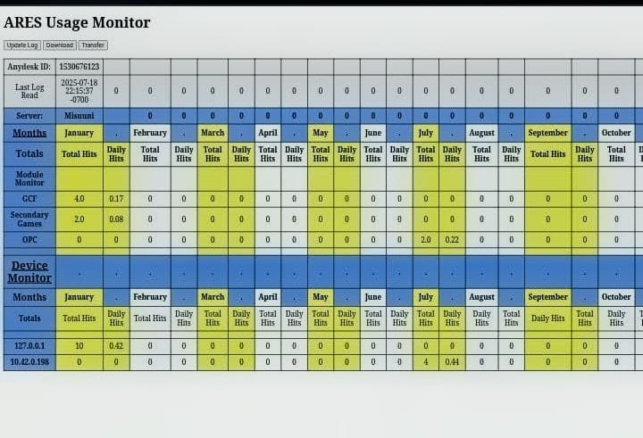
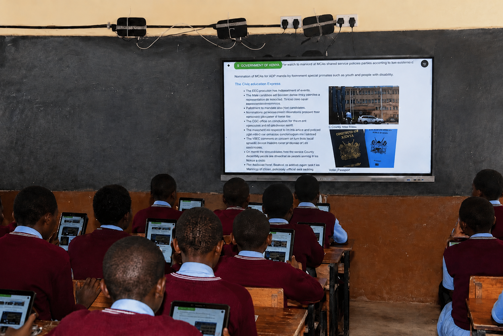

Project Overview
Deploying devices is the visible part of a digital literacy programme; knowing whether they genuinely change how children learn is the harder, quieter work. This project tackled that question by reading the usage logs that offline ARES devices quietly generate, and turning raw engagement figures into evidence the programme could act on.
Because these classrooms have little or no internet, conventional web analytics do not exist here. The challenge was therefore to build a feedback loop from local data alone, pairing numbers with what facilitators observed on the ground.
Key Responsibilities
- Extracted and cleaned ARES usage logs from deployed learning devices.
- Mapped engagement trends across content, time, and learner groups.
- Cross‑referenced log data with training attendance to measure facilitation effect.
- Flagged underused resources and repositioned them within the offline library.
- Translated findings into plain recommendations for teachers and coordinators.
Data Sources & Platforms Used
- ARES Platform Usage Logs
- Kolibri Engagement Records
- Device-Level Activity Data
- Training Attendance Records
- Offline Content Library Metrics
- Facilitator Field Observations
Tools & Technologies Used
Analysis & Evaluation Activities
- Extracting and cleaning raw usage logs from devices
- Mapping engagement patterns across content and time
- Correlating log data with facilitated training sessions
- Identifying and repositioning underused resources
- Drafting plain-language recommendations for staff
- Reviewing outcomes with coordinators to refine delivery
Impact & Outcomes
The programme shifted from guessing to knowing. Content curation became evidence‑led, training sessions were aimed where engagement was weakest, and coordinators gained a defensible picture of learning outcomes.
- Sharper, data‑informed content delivery across supported schools.
- More effective, better‑targeted teacher and learner training.
- A repeatable evaluation method that works entirely offline.
Project Evidence


Skills Demonstrated
- Offline Usage Log Analysis
- Learner Engagement Tracking
- Program Evaluation
- Data-Informed Content Curation
- Stakeholder Reporting
- Evidence-Based Recommendations
Project Outcome
This project strengthened practical experience in evaluating digital literacy programmes without relying on internet-based analytics. It also enhanced the ability to turn local, offline usage data into actionable insight, giving facilitators and coordinators a reliable evidence base for improving how content is delivered and how training is targeted.